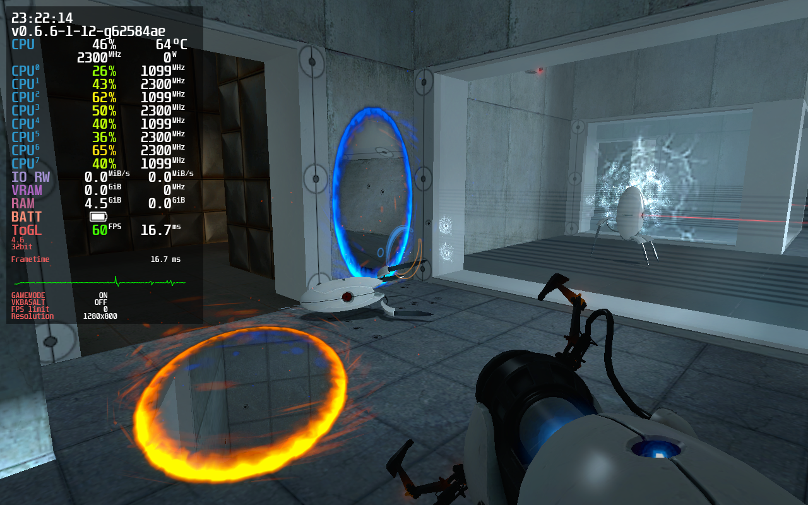

Important Information
General Information
- Intel's Mesa3D Linux drivers are dramatically unperformant compared to their Windows counterparts.
- Controller support works unless stated otherwise. The exception being Nintendo Switch Pro controllers because as of writing this, wired NS Pro Controllers cause most games in Proton to crash. This will not lower compatibility ratings because of the new HID driver coming in 5.16.
- These notes target SteamOS 3.0 for Steam Deck. I will not be using Lutris.
- Games not scaling to 16:10 isn't a huge enough issue to warrant lowering the rating.
- If a Linux port is available, I will primarily gauge compatibility with that build specifically.
Game Compatibility Notes
Game compatibility will be testing for: - Tinkering - Stability - Controllers - 1280x800 - Performance - Other flaws
Compatibility Rating Scale
 - Game works perfectly out of the box
- Game works perfectly out of the box
 - Game works but tinkering will be needed
- Game doesn't play perfectly even with tinkering, but remains playable.
- Game works but tinkering will be needed
- Game doesn't play perfectly even with tinkering, but remains playable.
 - Game has notable issues that prevent comfortable play.
- Game is outright broken
- Game is screwed because devs don't bother updating Anticheat.
- Game has notable issues that prevent comfortable play.
- Game is outright broken
- Game is screwed because devs don't bother updating Anticheat.
System Specifications
CPU: Intel Core i7-10510U @ 1.8GHz
GPU: Mesa Intel CometLake-U GT2 (UHD Graphics)
RAM: 16GB
Distro: EndeavourOS Linux, Manjaro Linux, Garuda Linux
Game Compatibility
Celeste
Native
Technology: FNA/XNA, OpenGL
Controller support: Perfect
Notes:
- See XNA/FNA.
- Doesn't scale to 16:10

DUSK
Native
Technology: Unity, OpenGL (Vulkan optional)
Controller support: Imperfect
Notes:
- Triggers will need to be forced to mouse in Steam Input
- Ctrl and Shift need to be forced in Steam Input
- -force-vulkan can be used to force Vulkan

Rivals of Aether
Proton (Any modern version)
Technology: GameMaker: Studio, Direct3D
Controller support: Perfect
Notes:
- Doesn't scale to 16:10
ULTRAKILL
Proton (Any modern version)
Technology: Unity, Direct3D
Controller support: None (Steam Input works Great!)
Notes:
- Create a Steam Input controller profile, it works great!
Mutant Mudds Deluxe
Proton (Any modern version)
Technology: Unknown, Direct3D
Controller support: Imperfect
Notes:
- Window will always shrink when in windowed mode, doesn't occur in Proton-4.11
- Game requires that you set controls to controller manually.
Dust: An Elysian Tail
Native
Technology: XNA/FNA, OpenGL
Controller support: Perfect
Notes:
- See XNA/FNA.

LEGO Star Wars: The Complete Saga
Proton (Any modern version)
Technology: Nu2, Direct3D
Controller support: Perfect
Notes:
- None!

Unreal Gold
Proton (GloriousEggroll)
Technology: Unreal (1998), Direct3D+3dfx
Controller support: None (Steam Input works great!)
Notes:
- Using any mainline Proton causes colors to be reduced
- No working controller support, use Steam Input

HROT
Proton (Use 5.0)
Technology: Custom, OpenGL
Controller support: Borked
Notes:
- Any Proton version > 5.0 causes awful performance.
- You must download this OpenAL32.dll file and replace the game's dll to fix audio.
- Steam Overlay doesn't work, causing controllers to be totally borked. Fixed with Gamescope.

DOOM 64
!!!INCOMPLETE!!!
Proton (Any modern version)
Technology: KEX, D3D+Vulkan+OpenGL
Controller support: Perfect
Notes:
- None...?
Quake (2021 Remaster)
Proton (Any modern version)
Technology: KEX, Vulkan
Controller support: Perfect
Notes:
- None?
Mirror's Edge
Proton 5.13
Technology: Unreal Engine, Direct3D
Controller support: Perfect
Notes:
- Using any Proton version newer than 5.13 will cause ambient sound effects to always play at full volume.
- Requires user input for installing NVIDIA PhysX.
- Does not scale to 16:10 properly.

Crysis
Proton (Any modern version)
Technology: CryEngine 2, Direct3D
Controller support: Perfect
Notes:
- Requires user input for installing PunkBuster and GameSpy Comrade.
- SecuROM build is completely borked on AMD. Use C1-Launcher.

A Hat in Time
Proton (GloriousEggroll)
Technology: Unreal Engine 3, Direct3D
Controller support: Almost perfect
Notes:
- Proton 6.3 and Experimental just cause the game to hang.
- You cannot use a mouse and controller in tandem, breaking the Steam Deck touchpads.

Castle Crashers
Proton (Any modern version)
Technology: XNA, Direct3D
Controller support: Perfect
Notes:
- Proton 6.3 causes the audio to stop working.
- Has an option to stretch the game to 16:10 (shown here). I think it's meh but you be the judge.

Bridge Constructor Portal
Native
Technology: Unity, OpenGL (Vulkan available)
Controller support: Perfect
Notes:
- With controllers, the D-Pad, Right Trigger, and Bumpers are completely unresponsive, and Steam Input might not easily help with this. This is fixed with Proton.
- Vulan is available with -force-vulkan

Postal 2
Native
Technology: Unreal 2, OpenGL
Controller support: Perfect
Notes:
- Forced itself to 1024x768 by default. (TODO: Present in Gamescope?)
- Menus are only navigable with D-Pad, unsure why.
Portal
Native
Technology: Source, ToGL
Controller support: Imperfect
Notes:
- Menus are only semi-navigable with the controller. Will likely be better on Deck because of Trackpads.

Portal 2
Native
Technology: Source, ToGL (DXVK-Native available)
Controller support: Full Steam Input Support
Notes:
- Vulkan support with -vulkan flag
Poker Night 2
Proton (Any modern version)
Technology: TellTale Tool, Direct3D
Controller support: Perfect
Notes:
- Doesn't scale to 16:10.
- Cannot be purchased on Steam.

Super Meat Boy
Native
Technology: Unknown, OpenGL
Controller support: Perfect
Notes:
- Doesn't scale to 16:10.
- Linux version is currently outdated, compared to Windows with version 1.2.5
- Proton: protontricks 40800 d3dcompiler_47 xact
- Proton: DualShock 4 broken with menus for some reason
Night Trap: 25th Anniversary Edition
Proton (See notes)
Technology: Unity, Direct3D
Controller support: Perfect
Notes:
- Poor performance.
- Doesn't scale to 16:10.
- This game relies on Media Foundation. For perfect support, you will need to rip the DLLs from a Windows installation. GloriousEggroll provides imperfect support.

Sonic R
Proton (Any modern version)
Technology: Custom, Direct3D
Controller support: Borked (Steam Input works great!)
Notes:
- It is recommended to use Sonic R Mod Launcher for D3D9 support. Wine-Mono will be required.
- TODO: Multiplayer requires a joystick, doesn't it?

Slayer's Testaments
Native
Technology: QuakeSpasm-Spiked, OpenGL
Controller support: Very Imperfect (Steam Input works great!)
Notes:
- Using a Steam Input config with an analog stick but everything else as KB/M is a good idea.
- TODO: Release a working Steam Input config if possible

Tag: The Power of Paint
Proton (Any modern version)
Technology: Custom, Direct3D
Controller support: None (Steam Input works great!)
Notes:
- protontricks d3dx9_35
- Does not scale to 16:10

Sonic Mania
Proton (Any modern version)
Technology: Custom, Direct3D
Controller support: Perfect
Notes:
- Does not scale to 16:10

Sonic Generations
Proton (Any modern version)
Technology: Custom, Direct3D
Controller support: Perfect
Notes:
- Stretches screen for 16:10. Blegh
- Brings up configuration screen on first boot. Might need desktop access.
- Really bad performance issues

Technology Compatibility
XNA/FNA
- Many XNA games will use FNA for ports
- Many XNA games have issues with the Steam Overlay. This is fixable with gamescope but gamescope is jank
- FNA games have issues with screen tearing, thanks Xorg.
Glossary
Gamescope: An XWayland window compositor by Plagman that will force windows into fullscreen
Steam Input: Valve's powerful controller configuration software
ToGL: Valve's Direct3D->OpenGL abstraction layer used in their earlier Linux ports.
DXVK-Native: A version of DXVK designed for usage outside of Wine.